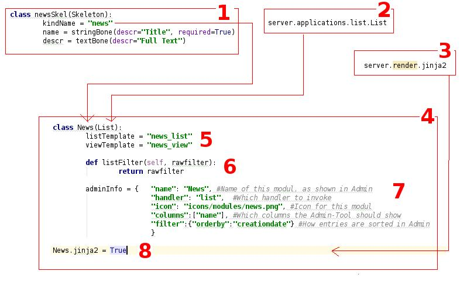

Getting started¶
Before getting started with ViUR, there are some pitfalls we should clarify up front. First, ViUR is not a content management system. It offers you the building blocks to build one in no time. But again, it’s not a ready to use cms. Second, you’ll need to understand the basic principle of building applications with ViUR. With ViUR, you’ll merge a model (a skeleton in ViURs language) and an application (like list/tree/hierarchy/singleton) into a module. On this level access-rights and module-specific code are added and at least one output renderer is attached.
Overview of an example module
- So whats happening here?
1) We define a model named ‘news’. Each entry will have a required name and an optional descr (description).
This model must be defined in your ‘models’ folder and should be in a file called ‘news.py’.2) We use the ‘List’ application to handle our data. So our news will be stored in a flat list with built-in filtering and sorting possibilities.
3)/8) We (explicitly) attach the jinja2 renderer to our module. As the jinja2 renderer is currently the default, there is no need to do this explicitly (ViUR will enable the admin and the jinja2 renderer by default. All other renderers have to be named here!).
- 4) We define the actual module. It must be in your ‘modules’ folder and should be in a file called ‘news.py’.
- We define a single class called ‘News’. That name is used to determine which skeleton (model) should be attached to this module, so it must be named exactly as the kindName used in the skeleton (Override the function ‘_resolveSkel’ if you need to change this behaviour).
5) Within this module, we declare which templates to use. This module would use ‘news_list.tpl’ inside your ‘html’ folder for rendering /news/list and ‘news_view.html’ for /news/view/some_news_id.
6) We override the default access restriction for view (default: deny everything except for admins). We allow everyone to view all news present in the system.
7) Add an adminInfo. If this dictionary is present, this module will show up in your admin/vi interface. Setting this to None will hide this module from your admin interfaces.
In the following short step-by-step guide we create our first custom module.
- Module name: News
- Application: List (Flat Data)
- Entities consist of Name and Description (Optional)
- List is public (everyone can see entries)
- Only admins can add or edit entries (ViURs default)
First step: Define the data-model. We define an Entity ‘news’, which contains two properties: name and description. Name is a short String (< 255 Chars); Description a longer, optional Text. This file should be named ‘news.py’ and must be in your ‘models’ folder.
# -*- coding: utf-8 -*-
from server.skeleton import Skeleton
from server.bones import *
class NewsSkel( Skeleton ): #Datamodel for this modul:
kindName = "news" #Save entities to the collection news
name = stringBone( descr="Name", required=True )
descr = textBone( descr="Description", required=False )
Second step: Create the file ‘news.py’ inside the ‘modules’ folder of the application and import the required application.
# -*- coding: utf-8 -*-
from server.applications.list import List
Third step: Create a subclass from the ‘List’ application and specify the required information for the admin tool. If a module should be hidden from the admin, set adminInfo to None.
class News( List ):
adminInfo = {
"name": "News", #Name of this module, as shown in Admin
"handler": "list", #Which handler to invoke
"icon": "icons/modules/news.png", #Icon for this module
"filter":{"orderby":"creationdate"}, #Default filter for the admin (i.e. dont filter; just sort )
"columns":["name"] # Default set of columns visible in the admin
}
Fourth step: Define the access rights. In this example, we make the list publicly readable, but changes are still restricted to administrators of the application. If we don’t override this function, read access would be also restricted to administrators only.
def listFilter(self, rawfilter):
# Accesscontrol: Let everyone view the contents
return( rawfilter )
Fifth step: Register the module. This enables the application. Simply list the module inside __init__.py in the ‘modules’ folder.
from modules.news import News as news
The application is now active and can be administrated using your favorite admin interface. However, there are no templates defined yet for data presentation in a webbrowser .
Create a template¶
The templates to use have to be registered in the module. Add the following lines to the module class.
viewTemplate = "news_view" #Name of the template which displays *one* entry
listTemplate = "news_list" #Name of the template which displays several entries
The whole module should now look like this:
# -*- coding: utf-8 -*-
from server.applications.list import List
class News(List):
viewTemplate = "news_view" #Name of the template which displayes *one* entry
listTemplate = "news_list" #Name of the template which displayes several entries
adminInfo = { "name": "News", #Name of this modul, as shown in Admin
"handler": "list", #Which handler to invoke
"icon": "icons/modules/news.png", #Icon for this modul
"filter":{"orderby":"creationdate"}, #Default filter for the admin (i.e. dont filter; just sort )
"coumns":["name"] # Default set of columns visible in the admin
}
def listFilter(self, rawfilter):
# Accesscontrol: Let everyone view the contents
return( rawfilter )
Now create the templates. Possible layout for html/news_view.html:
...
<h1>{{skel.name}}</h1>
{{skel.descr}}
...
Possible layout for html/news_list.html:
<table>
<thead>
<tr>
<td>Name</td>
<td>View</td>
</tr>
</thead>
{% for skel in skellist %}
<tr>
<td>{{skel.name}}</td>
<td><a href="/test/view/{{skel.id}}">View more</a></td>
</tr>
{% endfor %}
</table>
Got it? Then dive deeper into ViUR, depending on whether you are a designer or a developer!
Examples for developers¶
Add a more fine grained access model¶
Often we need to distinguish between registered users and guests. Step one: Add a new property to the ‘news’ model.
class NewsSkel( Skeleton ): #Datamodel for this modul:
kindName = "news" #Save entities to the collection news
name = stringBone( descr="Name", required=True )
descr = textBone( descr="Descr", required=False )
access = selectOneBone(descr="Access", values={"0":"Everyone", "1":"Registered users", "2":"Admins Only"}, required=True, indexed=True)
Step two: make the listFilter function aware of this
def listFilter(self, rawfilter):
usr = utils.getCurrentUser() # Is this request from an authenticated user?
if usr and usr["access"] and "root" in usr["access"]: # Its an admin
return rawfilter # Don't enforce any constrains here
if usr: # Just a normal user
rawfilter.filter("access <=", "2")
else: # Its a guest
rawfilter.filter("access <=", "1")
return rawfilter
Please note that this doesn’t need any changes inside the template. The template would now automatically receive only the entries the current user is allowed to see.
Switching to hierarchical Data¶
If a flat datastructure doesn’t fit your needs anymore, its easy to switch to a hierarchical structure. The following code shows the modified module, which utilizes the hierarchy application to store its data.
Update your skeleton to derive from server.applications.hierarchy.HierarchySkel
# -*- coding: utf-8 -*-
from server.bones import *
from server.applications.hierarchy import HierarchySkel
class NewsSkel( HierarchySkel ): #Datamodel for this modul:
kindName = "news" #Save entities to the collection news
name = stringBone( descr="Name", required=True )
descr = textBone( descr="Descr", required=False )
access = selectOneBone(descr="Access", values={"0":"Everyone", "1":"Registered users", "2":"Admins Only"}, required=True, indexed=True)
Then update your application to derive from server.applications.hierarchy.Hierarchy and override the corresponding canAccess methods:
# -*- coding: utf-8 -*-
from server.applications.hierarchy import Hierarchy, HierarchySkel
class News(Hierarchy):
viewTemplate = "news_view" #Name of the template which displayes *one* entry
listTemplate = "news_list" #Name of the template which displayes several entries
adminInfo = { "name": "News", #Name of this modul, as shown in Admin
"handler": "list", #Which handler to invoke
"icon": "icons/modules/news.png", #Icon for this modul
"filter":{"orderby":"creationdate"}, #Default filter for the admin (i.e. dont filter; just sort )
"coumns":["name"] # Default set of columns visible in the admin
}
def getAvailableRootNodes( self, *args, **kwargs ):
# We only want one RootNode per Application
repo = self.ensureOwnModulRootNode()
return( [{"name":u"Test", "key": repo.key.urlsafe() }] )
def canView( self, id ):
#Anybody can view every entry
return( True )
def canList( self, parent ):
#Anybody can browse a node
return( True )
Adding custom functions¶
Adding custom functions to an application is easy in ViUR. You could simply extend your News-Class (add a function) and mark it with @exposed. All functions marked with @exposed are directly accessible from outside. So if you have something like
# -*- coding: utf-8 -*-
from server.applications.list import List
from server import exposed
class News(List):
viewTemplate = "news_view" #Name of the template which displayes *one* entry
listTemplate = "news_list" #Name of the template which displayes several entries
@exposed
def test(self, *args, **kwargs):
return u"Hello world!"
....
your function ‘test’ would be accessible under the url “/news/test”.
It is possible to define one function as the default entry point (accessible under “/”). For this, create a module “index.py” and put the following code:
# -*- coding: utf-8 -*-
from server import exposed
class Index(object):
def __init__(self, *args, **kwargs):
super( index, self ).__init__()
@exposed
def index( self, *args, **kwargs ):
return u"Hello world!"
Index.jinja2 = True
Hint
All modules (as well as models) need to be included in the __init__.py of that folder. So for your Index module you’ll need to include the following:
from modules.index import Index as index
There are two ways to access the database. For pure custom code you can use the lightweight dictionary-based API:
from server import db
# Create a new entry
entry = db.Entry("news")
entry["name"] = u"Hello world!"
newKey = db.Put(entry)
# Fetch entries from the database
entry = db.Get(newKey) # Get the entry stored under key *newKey*
entries = db.Query("news").run(99) # Fetch up to 99 entries from the datastore
If you want to access data for which a skeleton is defined, it is highly recommended to use only the skeleton-API while working with those data. Corruptions might occur otherwise.
from models.news import NewsSkel
# Create a new entry
skel = NewsSkel()
skel["name"].value = u"Hello world!"
key = skel.toDB()
# Fetch entries from the database
skel = NewsSkel()
skel.fromDB(newKey)
skellist = NewsSkel().all().fetch(99) # Fetch up to 99 entries from the datastore
Examples for designers / frontend developers¶
As a template designer, you can focus on providing a good user experience and don’t have to bother about things like access control. Do you need to render a list? You’ll receive the global variable skellist:
<ol>
{% for skel in skellist %}
<li>{{ skel.name }}</li>
{% endfor %}
</ol>
If you’re inside a view (displaying only one item), you’ll receive skel instad:
Name: {{skel.name}}
Static content like css or images can be included by dropping it into the static directory of your application. It will be available under the url /static/.
Do you need two or more templates for the same thing? Use the style parameter. If you access /news/list?style=teststyle, ViUR will first try to load the template news_list_teststyle.html. If it does exist, this file will be used, otherwise ViUR loads the default template news_list.html and pass the global variable style set to “teststyle”.
Do you want to embed data from a different module into the current template? You can either embed a fully rendered template by calling execRequest or you can fetch the data by yourself and prepare output accordingly.
{{ execRequest("news/list", style="embed") }} {# Will call /news/list?style=embed and insert the result here #}
{% set newsList = getList("news") %} {# Fetch a list of news and assign the resulting skellist to newsList #}
{% for news in newsList %}
{{ news.name }}
{% endfor %}
Do you need the next page of list? Just append/update the cursor sent along with the request.
{% for skel in skellist %}
{{ skel.name }}
{% endfor %}
<a href="{{ updateUrl(cursor=skellist.cursor) }}">Next page</a>
SEO friendly URLs? Instead of pointing views to /news/view/{{skel.id}}, you can use something like /news/view/{{skel.id|shortKey}}/{{skel.name|urlencode}}
Translate a predefined key? Use {{ _(“there are {{count}} unread news”, count=skellist|length) }}. Please note that if you get translated string/textBones, these will adapt automatically to the current language. Just print them to your template with {{ skel.name }}.